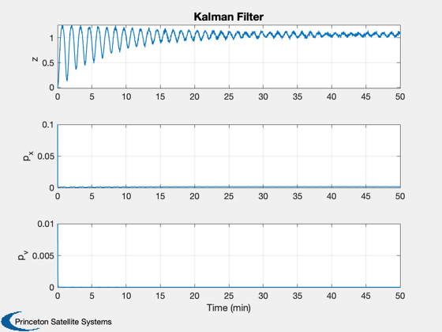
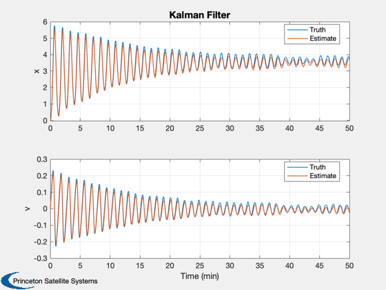

Unscented Kalman filter for a nonlinear spring.
Loads the stored mat-file KFSim. This contains the simulation results generated by NLSpringSim.
Demonstrates an Unscented Kalman Filter with a nonlinear dynamical system and nonlinear measurement. The filter tracks the system reasonably well.
See also KFInitialize, MeasNLSpring, RHSNLSpring, UKFPredict, UKFUpdate, UKFWeight, Plot2D, TimeLabl
Contents
%-------------------------------------------------------------------------- % Copyright (c) 2020 Princeton Satellite Systems, Inc. % All rights reserved. %-------------------------------------------------------------------------- % Since 2020.1 %--------------------------------------------------------------------------
Set up the filter
s = load('KFSim'); n = s.n; % Number of steps r = s.noiseMeas^2; % Measurement noise q = s.noiseForce^2; % Plant noise xE = [0;0]; % Estimated state p = [0.1 0;0 0.01]; % Initial covariance xP = zeros(7,n); s.d.w = s.w; % Initialize the filter dUKF = KFInitialize( 'ukf','f',@RHSNLSpring,'dT',s.dT,... 'fData',s.d,'h',@MeasNLSpring,... 'hData',s.d,'p',p,... 'q',q,'x',xE,'m',xE,'r',r); % Get the UKF weights dUKF = UKFWeight( dUKF);
UKF Estimation Loop
t = 0; for k = 1:n % Measurement z = s.xP(3,k); % Store variables to plot xP(:,k) = [z;diag(dUKF.p);s.xP(1:2,k);dUKF.m]; % Add a measurement source dUKF.t = t; dUKF.y.data = z; dUKF.y.param.hFun = @MeasNLSpring; dUKF.y.param.hData = s.d; dUKF.y.param.r = r; % Unscented Kalman Filter dUKF = UKFPredict( dUKF ); dUKF = UKFUpdate( dUKF ); t = t + s.dT; end
Plot
yL = {'z' 'p_x' 'p_v' 'x' 'v' };
lL = {{'Truth','Estimate'} {'Truth','Estimate'}};
[t,tL] = TimeLabl(0:(n-1)*s.dT);
Plot2D(t,xP(1:3,:),tL,yL(1:3),'Kalman Filter');
Plot2D(t,xP(4:7,:),tL,yL(4:5),'Kalman Filter',...
'lin',{'[1 3]' '[2 4]'},[],[],[],[],lL);
%--------------------------------------
% $Date$
% $Id: 8ced62a29938eca679357d385405fd96db4cecc6 $
 